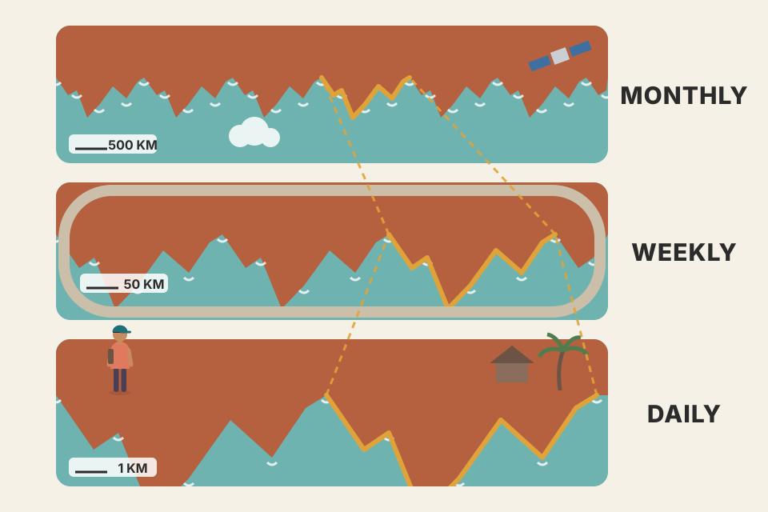
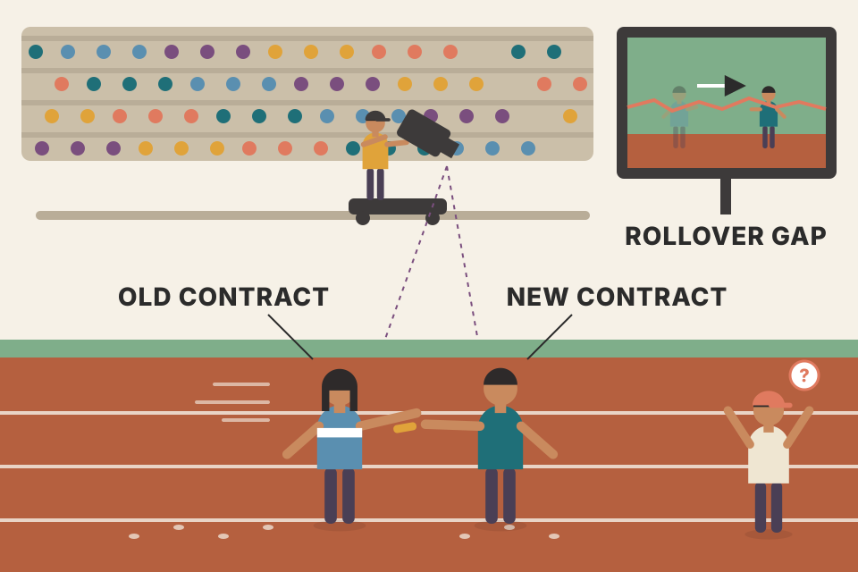
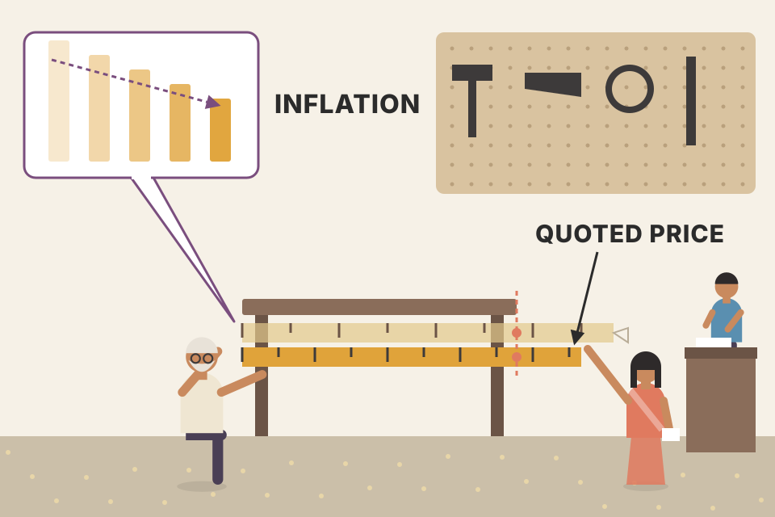
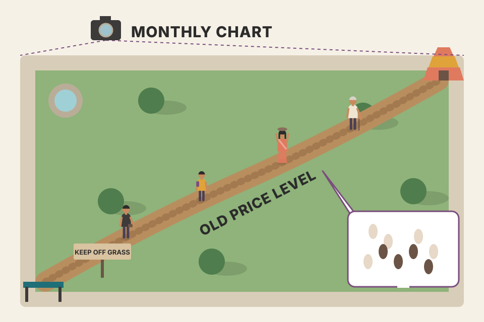

A daily chart shows a few months. Weekly and monthly charts squeeze years and decades onto one screen, and the same tools still work on them: trendlines, support and resistance, retracements, patterns. This page covers the whole chapter in the book's order: why the long view matters, how futures traders stitch expiring contracts into one long chart, Murphy's views on randomness and inflation, the long-to-short reading order, and why log scale breaks trendlines sooner. Every chart uses a simulated market, not real prices. Roll a new market to check which conclusions survive.
Murphy's argument in one chain. The long view is for analysis; the short view is for timing.
The daily bar chart is by far the most popular chart, and it usually covers only six to nine months. Because most traders care about short-term moves, the daily chart became the chartist's main working tool. Murphy's complaint: leaning on it so heavily makes many people overlook a very useful area of charting, weekly and monthly charts for longer-range trend analysis and forecasting.
A thorough trend analysis should ask where today's price sits within the market's long-range trend, and that needs longer-range charts. On a daily chart each bar is one day; on weekly and monthly charts each bar is one week or one month. The purpose is to compress price action so the time horizon can be stretched a long way.
A map app. At street level (daily) you see every lane but not where the road is going. Zoom out to the city (weekly) and the country (monthly) and the same screen now shows the highway you're on.
All three views are the same simulated 20-year market and always show 180 bars. A weekly bar is 5 trading days merged (open of the first day, highest high, lowest low, close of the last day); a monthly bar is about 21 days merged. The screen holds the same number of bars, so each step up the ladder covers about 5× or 21× more time.
| day | open | high | low | close |
|---|---|---|---|---|
| Mon | 100.0 | 103.0 | 99.0 | 102.0 |
| Tue | 102.0 | 104.0 | 101.0 | 101.5 |
| Wed | 101.5 | 102.0 | 97.0 | 98.0 |
| Thu | 98.0 | 100.0 | 97.5 | 99.5 |
| Fri | 99.5 | 101.0 | 99.0 | 100.5 |
| week | 100.0 | 104.0 | 97.0 | 100.5 |
The weekly bar keeps four numbers out of twenty: Monday's open, the highest high (Tuesday), the lowest low (Wednesday) and Friday's close. It reads "up 0.5% on a 7% range". It no longer says that Wednesday fell 3.4% or which came first, the high or the low. That's the trade: you lose the day-to-day path and gain about five times more history per screen. A monthly bar does the same thing with about 21 days. (The table is my example, not the book's.)
Long-range charts give a view of the trend that daily charts alone can't give. Chapter 1 made two points this rests on: one of chart analysis's biggest strengths is that its principles work in any time dimension, long-range forecasting included; and it's a fallacy that technical analysis should be limited to short-term "timing" while long-range forecasting is left to fundamental analysts.
Murphy's charts in this chapter show that trend analysis, support and resistance, trendlines, percentage retracements and price patterns all work well on long-range price moves. His blunt conclusion: if you don't consult these longer-range charts, you're missing an enormous amount of valuable price information.

A coastline looks jagged from a cliff, from a plane and from a satellite. The bays and headlands get bigger as you go up, but they are still bays and headlands, so the same vocabulary describes all three views. Chart tools work the same way: a monthly double top is drawn and read exactly like a daily one, just with years between the peaks instead of weeks.
Two reasons the tools carry over (my explanation, not Murphy's wording). First, the levels are exact: a monthly bar's high is the highest daily high of that month, and its low the lowest daily low, so a support or resistance line drawn on a monthly chart sits at a price that really traded. Nothing is averaged away at the extremes; only the path between them is dropped (section 01). Second, the crowd is the same: whoever bought at a level years ago and is still holding, and whoever sold there, still has a reason to act when price returns. Those people don't care which bar size you're looking at.
What a short window can't do is show you levels that are older than the window. The chart below measures that (the test and its simulation are beyond the book). On each of 40 simulated random-walk markets (20 years each, no trend, no memory) it looks at today's price and finds the nearest major high at least 2% above it: a monthly high that was the highest point for 6 months either side, or the highest point of the last 6 months. (The 2% skips the trivial case of this month's own high sitting just above its close.) Then it asks how many months ago that high was made. If it's older than the window you look at, your chart doesn't show it.
Read the pooled line. On roughly half of these markets (it varies by roll: 14 to 23 of 40 in the rolls I checked) the nearest major high above today's price is more than 9 months old, so a trader working only from a daily chart can't see the first level price will run into. A 5-year weekly window still misses it about a quarter of the time; the 20-year chart never misses it, by construction. That's Murphy's point about the information a short chart leaves out, turned into a count. Random walks have no memory, so this says nothing about whether old levels matter (section 11 tests that); it only shows how often they're out of view. Simulated data.
Price is 118 today. The last 9 months topped at 124. Three years ago the market peaked at 131, and eleven years ago at 152.
Same market, same day, three different maps of what's overhead. Section 08 turns this into a reading order.
The average futures contract trades for about a year and a half before it expires. That limited life is a problem if you want a chart going back several years. Stock chartists don't have this problem: charts of individual stocks and the market averages exist from the first day of trading.
The answer is the continuation chart: link a series of contracts together, and when one expires, switch to the next. The simplest method, and the one most chart services use, is to always plot the nearest expiring contract. When it stops trading, the next one in line becomes the nearest and is the one plotted.

A relay race filmed by following whoever holds the baton. When the baton passes, the camera jumps to a runner standing a few metres ahead or behind. The film looks like the runner teleported, but nobody actually moved.
Each faint line is one simulated contract, expiring every three months (my choice). Each trades at a premium or discount to the others depending on how far away its expiry is. The bold line jumps to the next contract at each expiry (dotted lines), and when the next contract is priced differently, the chart shows a gap that never happened in any single contract. Choose "the same price" and the gaps disappear.
How to read the second readout line. A roll-day signal is false when the chart shows a new 20-day high or low but the contract you'd actually hold, judged on its own 20-day history, doesn't. A signal is missed when the held contract made one but the chart didn't. Try the three carry buttons above. With a premium or a discount, more than half of the roll-day signals on the nearest-contract chart are false, and the gap-adjusted chart removes most of them. With "the same price" there's little gap to fake a signal, and the adjusted chart is no better, because the gap it subtracts is measured on one jumpy day. The misses in every case come from Murphy's second flaw: the expiring contract's volatile last weeks set the chart's 20-day high and low, so a real breakout in the next contract may not clear them. Shifting the history doesn't remove that noise; rolling early does.
strategies_from_equations.md lists "futures roll costs and gaps" among the risks of trend following on Nifty futures. The worked example above is that risk made concrete.NIFTY1! (first contract) and NIFTY2! (second contract) are continuation charts of exactly this kind. Check whether the chart is back-adjusted before you backtest on it.Linking nearest contracts is simple and solves the continuity problem, but it has two flaws. The expiring contract may trade at a large premium or discount to the next, so the changeover causes a sudden jump or drop on the chart. And some spot contracts get extremely volatile just before expiry. Futures technicians have devised many fixes:
Splicing film shot on different cameras. Cut at the last frame of each reel and every splice jumps (nearest contract). Cut earlier, before the shaky end of each reel (roll early, second contract). Use only one camera a year (one calendar month). Or re-grade the old footage so its colours match the new reel at every splice (adjusted series): smooth, but the old frames no longer show the colours that were really there.
The faint line is the nearest-contract chart for comparison. Rolling early or charting the second contract avoids the shaky final weeks (the simulated contracts get extra-jumpy in their last month), but the roll gaps are still there. The calendar-month chart rolls only once a year, so it has fewer but bigger gaps. The gap-adjusted line shifts all earlier history by each roll gap, so the gaps vanish, but its old prices are no longer prices anyone actually traded. That adjustment method is one common form of what Murphy describes; its exact mechanics are beyond the book.
Contract A expires at 100; on the same day contract B trades at 102. The roll gap is +2 points, or +2%. Take two older prices on the chart, 50 and 95 (a +45 point, +90% rally).
| method | what it does to older prices | 50 becomes | 95 becomes | the rally is now |
|---|---|---|---|---|
| point (difference) adjust | add the gap, +2 | 52 | 97 | +45 points (kept) · +86.5% (changed) |
| ratio adjust | multiply by 102 ÷ 100 | 51.0 | 96.9 | +90% (kept) · +45.9 points (changed) |
Failure modes. Point adjustment keeps point moves but bends percentage moves, and after many rolls in the same direction it can push old prices below zero: 30 rolls of −2 points subtract 60, so an old price of 40 plots at −20. Ratio adjustment never goes negative and keeps percentage moves, but old point values (and so rupee P&L per contract) are off. Use point adjustment when your backtest sizes in points or contracts, ratio adjustment when it works in percentages. Either way, the old prices are not prices anyone traded, so a horizontal "support" at an adjusted level is not a level the market actually saw.
| method | gaps on chart? | real traded prices? | spot-month noise? | good for |
|---|---|---|---|---|
| nearest contract | yes, at every roll | yes | included | chart analysis (Murphy: adequate) |
| roll a month or two early | yes | yes | avoided | charts without the expiry-week swings |
| second or third contract | yes | yes | avoided | same, without choosing a roll date |
| highest open interest | yes, when the leader changes | yes | mostly avoided | "truest picture of market value" (the theory Murphy reports) |
| one calendar month (Gann) | once a year, larger | yes | included | year-on-year comparison of one contract month |
| averages, indices, Perpetual Contract™ | smoothed away | no, a blend | smoothed | back-testing (Murphy, section 05) |
| point or ratio back-adjusted (beyond the book) | removed | no, history shifted | included | back-testing, with the caveats above |
The first six rows are Murphy's methods; the "good for" column for them is my summary. The last row and the chart's two adjusted options are beyond the book.
An innovative fix came from Robert Pelletier, president of Commodity Systems, Inc. (CSI), a commodity and stock data service in Boca Raton, Florida: the Perpetual Contract™ (a registered trademark of that firm). Its aim is years of futures history in one continuous series. It does this by fixing a constant forward time period, for example the value three or six months into the future (the user picks the period), and taking a weighted average of the two contracts whose expiries surround that date.
A weather report for "exactly 90 days from today". No forecast is published for that date, but there are forecasts for the end of this month and the end of next; you blend them in proportion to how close each date is. The blend glides smoothly from day to day, with no jumps.
Today is day 0. Contract 1 expires on day 60 and trades at 100; contract 2 expires on day 150 and trades at 103. You chose a 90-day forward period, so the target date is day 90, which sits between the two expiries.
Why there's never a jump. As days pass, weight slides from the nearer contract to the further one. When the target date reaches contract 2's expiry, the weight on contract 1 is exactly 0, so the value is contract 2's price. The next day the pair becomes (contract 2, contract 3) with almost all the weight (89 ÷ 90) still on contract 2. The value hands over continuously. The roll that makes a gap on the nearest-contract chart happens here one weight-step at a time.
Move the sliders: the spot price is held flat at 100 so you can see the pure roll effect. The nearest-contract line sags toward 100 as each contract nears expiry, then jumps at each roll. The constant-forward line stays nearly flat, close to the price of a contract that is always the chosen period away.
Contracts here expire every 90 days (days 60, 150, 240, 330, 420) and each trades at spot × ecarry × days-to-expiry ÷ 252. The forward period is kept at 90 days or more so a contract always expires between today and the target date. All of this setup is mine, not the book's.
backtest_results_summary.md) used NSE data from TradingView. If you test futures systems on continuous data, check how the series was rolled, because roll gaps can trigger signals that never happened in a real contract.The most striking thing about long-range charts: trends are very clearly defined, and they often last for years. Murphy asks you to imagine a forecast based on one of them that you wouldn't need to change for several years.
That raises the question of randomness. Technicians don't accept that markets are random and unpredictable, but Murphy grants that whatever randomness exists is probably a very short-term phenomenon. His argument: trends that persist over long periods, often for years, are a compelling argument against the Random Walk theorists' claim that price changes are serially independent (past prices have no effect on future prices).
price_physics_basics.md): drift grows with time t, but noise only with √t. With roughly 12% drift and 15% volatility a year, your note puts the chance of a day being up at about 52%, a month about 59%, a year about 79%. The readout measures the same thing on the simulated market. So a long chart shows a trend more clearly even when every day is close to a coin flip.Model the log price as drift μ per year plus random noise with volatility σ per year, each day independent of the last. Over a horizon of h trading days the expected move is μ·h/252 and the noise is σ·√(h/252). The chance the move is positive is the normal curve Φ evaluated at their ratio:
The "theory" numbers in the readout are this formula; the other numbers are counted on the simulated path. The only thing that changes with the horizon is √h. That's the whole reason a monthly chart looks trendier than a daily chart of the same market.
If monthly returns are independent, the variance of 12-month returns is exactly 12 × the variance of 1-month returns, so the ratio VR(12) = Var(12-month) ÷ (12 × Var(1-month)) ≈ 1. If months tend to follow the previous month's direction (momentum, "trends persist"), 12-month moves are bigger than independence allows and VR > 1. If they tend to reverse, VR < 1. Lo and MacKinlay built a formal test on this idea (Review of Financial Studies, 1988) and rejected the random walk for weekly U.S. stock-index returns. Moskowitz, Ooi and Pedersen ("Time Series Momentum", Journal of Financial Economics, 2012) found that a futures market's own past 12-month return tended to predict its next month's return, across dozens of futures markets. Those findings are much closer to Murphy's claim than any single chart.
The experiment: simulate 200 twenty-year markets of monthly returns with no memory, and 200 where each month keeps a fraction φ of the previous month's surprise. Compute VR(12) for every one. The chart counts how many of each 200 land in each VR(12) bucket (0.1 wide, from 0.2 to 2.2; the end buckets also hold anything beyond). Grey bars are the no-memory markets, coloured bars the momentum markets.
Read the overlap. With only 20 years of monthly data, a pure random walk lands above 1.2 in a noticeable share of markets just by luck, and modest real momentum (φ = 0.10, true VR about 1.2) usually hides inside the random-walk range. (The random-walk average comes out a little under 1 because the estimate is slightly biased downward in samples this short.) That's the statistical version of the caveat above: a few decades of one chart can't settle the argument either way. Pooling many markets, as Moskowitz, Ooi and Pedersen did, is how researchers got enough data. Simulated data; no claim about any real market.
Price patterns appear on long-range charts and are read the same way as on daily charts. Double tops and bottoms are very prominent, and so are head and shoulders reversals. Triangles, usually continuation patterns, are seen often.
Another frequent pattern is the weekly and monthly reversal. For example, on a monthly chart, a new monthly high followed by a close below the previous month's close often marks a significant turning point, especially near a major support or resistance area. Weekly reversals are quite common on weekly charts. They are the long-range version of the key reversal day on daily charts, but they carry much more significance.
A ▼ marks a bar that made a new high for the move, then closed below the previous bar's close (a bearish reversal). A ▲ marks the mirror image: a new low, then a close above the previous close. "New high for the move" is defined here as the highest high of the last 12 months (or 26 weeks); that window is my choice. Not every reversal is a major top; Murphy says they matter most near major support or resistance. The second readout line counts how many of this chart's bearish reversals really were the highest point of their neighbourhood (12 months either side on the monthly chart, 26 weeks on the weekly). Most turn out to be pauses in a trend that kept going. This market was designed through fixed turning points, so treat that count as a picture of the idea, not a hit rate.
A crowd pushes through a door to new ground (the new high), then by the end of the month has walked back out past where it stood last month (the lower close). The buyers got their chance at higher prices and couldn't hold them. A daily key reversal is that story told about one day. A monthly reversal is the same story told about a whole month of trading, so one nervous afternoon can't produce it, which is why it carries more weight.
Last Friday's close was 104.0. The highest high of the previous 26 weeks was 106.0. Step through the week and watch the weekly bar build on the right.
The rule needs only the finished weekly bar, so the signal exists only after Friday's close. Step to Friday to see one way to trade it drawn on the chart (beyond the book: Murphy gives the signal, not a trade plan): sell if next week trades below this week's low, with the stop just above this week's high. The stop is a whole week's range away, the cost of using a weekly signal (section 10), and the plan has no target; the exit would come from a trailing stop or the next support level on the long-term chart. In code (beyond the book):
A reversal by itself is not rare. The readout below runs the monthly rule (new 12-month high, close below the previous close) on 40 simulated random-walk markets of 20 years each, with no trend and no memory, and compares the next 6 months after a bearish reversal with the next 6 months after any month. On noise there is no edge to find, by construction. That's why Murphy adds the condition that it happen near major support or resistance: the pattern alone fires often. If you test it on real NSE data, this is the baseline to beat.
The order you study charts in matters. Start with the long range and gradually work toward the near term. If you start with only the near-term picture, you have to keep revising your conclusions as more data comes in; a thorough analysis of a daily chart may need redoing completely once you've seen the long-range charts. If you start with the big picture, going back as far as 20 years, all the data is already in view and you have the proper perspective. Then you "zero in" on the shorter term.
The readout below reads this simulated market top-down and writes the plan a swing trader would carry into the daily chart. The target is the major high from the monthly chart; the line that says "the big picture is wrong" is the long-term trendline; reward ÷ risk compares the two distances from today's price.
What this simulated market usually shows (check the readout after rolling a few markets): the monthly chart says "uptrend" while today's price sits much closer to resistance than to support. That is a reason to wait for a pullback on the daily chart, not to buy now. And the daily-only analyst, who never looked up, would be drawing resistance at the highest high of the last nine months, which may be nowhere near the level that matters.
Finding a house: country → city → street. If you start on the street, you'll keep redrawing your mental map. If you start with the country, every later view slots into place.
The levels found on the monthly chart (the major high, an earlier major high, the long up trendline) are carried down into the weekly and daily views. On the daily chart alone they'd be invisible or look random. The shaded strip shows where the next, closer view will zoom in.
tori_trendlines_explained.md starts the same way: higher timeframes first (monthly → weekly → daily) to set the bias, then a 4-hour chart for execution.backtest_results_summary.md, the 200-day market filter was the one consistent winner, and the verdict was that delivery trades on weekly/monthly signals is where the edge is: the long view setting the direction.A common question, and a point of controversy among analysts: should old price levels on long-range charts be adjusted for inflation? After all, do long-ago peaks and troughs mean anything if they aren't adjusted for changes in the value of the U.S. dollar?
Murphy says no adjustment is needed, for several reasons:
Figure 8.1 overlays gold and the Dow Industrials from early 1979 to early 1998. Gold spikes to its 1980 peak and then spends the rest of the period well below it, while the Dow climbs from near the bottom of the chart to new highs. Murphy's caption: the 1980 gold peak ushered in two decades of low inflation, and low inflation normally brings falling gold and rising stocks. The chart has already done the inflation adjustment, so why do it again?

A ruler that shrinks a little every year. Measure the same table with it today and it reads longer than it did ten years ago. You could correct every old reading, but the people who traded at the old readings acted on the numbers on the ruler at the time, and the numbers on today's ruler are the ones today's orders are placed at. Murphy's view: the market's quoted price already is the corrected reading.
This simulated commodity has a steady "real" value with swings around it. Priced in a currency that loses value each year, its quoted price climbs: Murphy's first point, the market making the adjustment itself. Tick the adjusted line to see what an analyst would plot after dividing inflation back out. Murphy's view is that the quoted (nominal) chart is the one to analyse: on those unadjusted charts, markets keep failing at old resistance and bouncing off old support.
A market peaked at 100 eighteen years ago. Prices in general have risen 3.5% a year since, so the price level is 1.03518 = 1.86× what it was.
The same arithmetic runs the simulation above: at 6% a year for 30 years, 1.0630 = 5.74, so a commodity whose real value didn't change at all is quoted at about 5.7 times its starting price, and the currency has lost 1 − 1 ÷ 5.74 = 83% of its value. The rise in the quoted price is the inflation.
Murphy himself calls this controversial. Some analysts do deflate very long charts (for example, stock indices over many decades) to compare real gains across eras. Both views exist; Murphy's is the technician's one.
Murphy separates market analysis (forecasting) from the timing of trades. Long-term charts help find the major trend and price objectives. They're not suitable for timing entries and exits and shouldn't be used for that. For that more sensitive task, use daily and intraday charts.
A map of India tells you to drive north; it can't tell you which lane to be in at the next junction. Use the map for direction and the road in front of you for the turn.
The average range of one bar (high − low as a % of price) grows with the timeframe. A stop placed beyond the last monthly bar is many times further away than one beyond the last daily bar, so position sizes would have to shrink, or risk would balloon. That's one practical reason Murphy's split makes sense.
Fix the most you're willing to lose on a trade, place the stop one average bar-range below the entry, and buy as many shares as that risk allows: shares = risk ÷ stop distance. The stock costs ₹1,000; the bar ranges are the ones measured above on the simulated market.
| stop based on | stop distance | shares | position value |
|---|
A stop placed off the monthly chart forces a position many times smaller for the same risk, so most of your capital sits idle; keep the full position and the loss on a stop-out is many times larger. Timing on the daily chart, inside the direction the monthly chart gives, lets the stop be tight while the bias stays long-term.
tori_trendlines_explained.md does exactly this split: higher timeframes for bias, a 4-hour chart for the actual entry.The chapter ends with long-term weekly and monthly charts (Figures 8.2–8.12). The drawings on them are limited to long-term support and resistance, trendlines, percentage retracements, weekly reversals and an occasional price pattern. But anything you can do on a daily chart can also be done on a weekly or monthly one. Later in the book Murphy shows how to apply technical indicators to long-term charts, and how signals on weekly charts become valuable filters for shorter-term timing. Remember too that semilog scaling becomes more valuable for long-range trends (section 12).
| Fig | Market · chart | The lesson |
|---|---|---|
| 8.2 pdf p226 | Phlx Semiconductor index (SOX) · weekly, 1996–98 | The late-1997 fall stopped right at a 62% retracement and bounced off chart support formed the previous spring (circled), showing the value of a weekly chart's perspective. |
| 8.3 pdf p226 | General Motors · weekly, 1993–98 | The early-1998 bottom started right at the up trendline drawn along the 1995–1996 lows (labelled a three-year up trendline on the chart). Murphy: that's why it pays to track weekly charts. |
| 8.4 pdf p227 | Burlington Resources · monthly, 1988–97 | The 1997 rally stopped at the same level as the 1989 and 1993 rallies; the 1995 bottom matched the 1991 bottom. |
| 8.5 pdf p227 | Inco · monthly, 1987–97 | The 1989, 1991 and 1995 tops were all right at 38, useful to know during the 1997 rally. |
| 8.6 pdf p228 | IBM · monthly, 1973–97 | Murphy uses this one to ask whether long-term charts matter: the 1993 bottom was at the same level as the 1974 bottom, 20 years earlier (long-term support near 20); breaking an 8-year down trendline in 1995 (boxed) confirmed the new major uptrend. |
| 8.7 pdf p228 | Helmerich & Payne · monthly, 1979–97 | Finally broke above 19 in 1996 after failing there in 1987, 1990 and 1993; the late-1996 pullback at 28 came near the 1980 peak. |
| 8.8 pdf p229 | Dow Jones & Co · monthly, 1984–97 | A head and shoulders bottom formed over 10 years (1988–1997); the right shoulder was also shaped like a bullish ascending triangle; the breakout over the neckline at 42 completed the bottom. |
| 8.9 pdf p229 | Southwest Airlines · monthly, 1991–98 | A 3½-year bullish symmetrical triangle, easy to spot on the monthly chart but probably missed on a daily one. |
| 8.10 pdf p230 | Dow Utilities · monthly, 1973–98 | The 1994 bottom bounced off an up trendline that had lasted 20 years. Murphy aims this one at people who say past prices have no bearing on the future: look at these long-term charts again (section 06). |
Murphy's caption on the Burlington chart sums up the chapter in a line: "Who says charts don't have a memory?" (Figure 8.4)
This market was built through fixed turning points so each lesson is visible; it's a picture of what the tools look like on a monthly chart, not evidence that they work. The readout prints the actual touch levels so you can see how close each one comes.
How steady the pictures are (checked over 40 rolls of this market): the three tops land between 62.0 and 66.3, the two bottoms between 41.1 and 44.9, the post-breakout pullback low holds 2.8–6.2% above 62, and the decline in the retracement lesson stops at a 62–70% retracement. Those ranges are a property of the turning points the market was built through (the noise moves them a little), not evidence that real charts have memory. On a few rolls one of the "62" tops pokes up to about 64–66, so "near 62" is the honest description.
A rally runs from 60 to 120, a 60-point move. The common retracement levels are measured back from the top:
Now suppose an old consolidation sat at 82–86. A decline that stops near 83 has two reasons to stop there at once: the 62% level and old chart support. That stacking of reasons is what Figure 8.2 shows on the semiconductor index. Role reversal (Chapter 4) works the same way in the breakout lesson: resistance at 62 that held three times becomes the floor once price closes well above it, so the later pullback stalls just above 62.
In practice (beyond the book): mark the monthly levels once, set price alerts at them, and only open the daily chart when an alert fires. The monthly chart decides where to pay attention; the daily chart decides whether to act.

A path worn across a lawn. Nobody planned it; people kept walking where others had walked. Old price levels work the same way: buyers who got in at 38 years ago, and sellers who wished they'd sold there, make 38 a place where orders bunch up again. A monthly chart is the aerial photo that shows the worn path.
Murphy's examples are well chosen, but a chart book shows the hits. How often would "years apart, same level" happen in a market with no memory at all? The test: 40 simulated random-walk markets, 20 years of monthly bars each (the same markets as section 07's baseline). A major high is a monthly high that is the highest point for 6 months either side. Count pairs of major highs at least 2 years apart whose prices are within the tolerance of each other.
The chart shows the first of the 40 markets that has such a pair, so it is picked to show the effect; the readout counts all 40. Repeated tops years apart turn up on most pure-noise markets. So a single chart where two tops match is weak evidence of memory on its own. A real test (not in the book) compares what price does at old levels with what it does at random levels in the same market: if old highs stop rallies more often than arbitrary prices do, that's memory. Use Murphy's examples to learn what the tools look like, and test before you trust them with money. Simulated noise; no claim about real markets.
backtest_results_summary.md (weekly uptrend with close > 50-week average > 200-week average, dip to the 20-week EMA, buy when a week closes above the prior week's high) made 18.5–26% a year with FYERS charges and slippage included, and all 8 parameter settings were profitable out-of-sample.The last two examples show the Japanese stock market (Nikkei) on the same monthly chart, scaled two ways. On the linear chart (Figure 8.11), the long-term up trendline (line 1) drawn under the 1982 and 1984 lows was broken in early 1992 near 22,000, two years after the actual peak. On the log chart (Figure 8.12), line 1 is joined by a steeper line 2, which was broken in mid-1990 at 30,000. Murphy's caption: up trendlines on log charts are broken sooner than linear up trendlines.
The index levels here come from the figure captions. (Beyond the book: my own reading of the scanned figure.) The price-axis labels on the scanned charts (about 1,000 to 4,000) appear to be the index divided by ten, so the circled break a little above the 2,000 gridline matches the caption's 22,000.
On a linear chart a straight line adds the same number of points every month. On a log chart a straight line adds the same percentage every month. A market rising 30% a year looks like a curve bending upward on a linear chart; a linear trendline under it falls further and further behind, so price has to collapse a long way before it crosses the line.
Line 1 joins the same two simulated lows on both scales. On the linear scale it climbs by fixed points, stays far below a parabolic rally, and is only broken long after the peak. On the log scale the same two lows define a line rising by a fixed percentage, which tracks the rally much more closely, so the break comes soon after the top. Line 2 (log, through later lows) is steeper still and breaks first. The readout shows how many months after the peak each break comes; its last line repeats the test over 40 simulated bubbles.
Two lows: 100 at month 0 and 150 at month 30. Extend a line through them both ways.
If the rally keeps compounding and peaks at 400 in month 90, price has to fall 16% to touch the log line (337.5) but 37.5% to touch the linear one (250). The faster and longer the rally, the wider that gap.
Murphy's Nikkei numbers say the same. The log chart's line 2 broke at about 30,000 in mid-1990; the linear line 1 broke near 22,000 in early 1992. From 30,000 to 22,000 is a further fall of about 27%, and it took about a year and a half more. Beyond the book: the Nikkei's all-time high at the end of 1989 was close to 39,000, so the log break came about 23% below the peak and the linear break about 44% below it.
An idealised rally with no noise: the first low is 100 at month 0; price compounds at the early pace to the second low at month 30; then it speeds up to the late pace until the peak; then it falls at 40% a year. Both trendlines go through the two lows. The defaults roughly reproduce the worked example above (lows 100 and 151, peak about 409 in month 90).
Three things to try. Set the late pace equal to the early pace: the price stays exactly on the log line all the way up, so the log line breaks as soon as the fall starts, while the linear line is still far below. That's the mechanism in one move: a log line is a constant-percentage path, so it follows a compounding market; a linear line adds fixed points, so it falls behind any compounding market. Then raise the late pace: price pulls away from both lines, but much further from the linear one. Finally, set both paces low (5–10%): the two lines nearly coincide, which is why the scale matters little on short or slow trends and a lot on long, fast ones (Murphy's semilog advice in section 11).
About six to nine months. Weekly and monthly charts compress price action (one bar = one week or month) so years or decades fit on one chart (section 01).
Contracts expire, with an average life of about a year and a half. Long charts have to link successive contracts: a continuation chart (section 03).
A roll gap: the chart switched to the next contract, which traded at a premium or discount to the expiring one (sections 03–04).
Roll a month or two early; chart the second or third contract; chart the highest-open-interest contract; link one calendar month (Gann's method); average contracts or build adjusted indices; or use a constant-forward series like the Perpetual Contract™ (sections 04–05).
No: it's a weighted average of the two contracts around a fixed forward date. For chart analysis, nearest-month charts are adequate; a continuous series is more useful for back-testing (section 05).
Trends on long-range charts persist for years, which he says argues against serial independence; any randomness is probably short-term. Caveat (beyond the book): random walks can also produce long-looking swings, so visual persistence alone doesn't settle it (section 06).
The market makes a new monthly high, then closes below the previous month's close. It's especially significant near major support or resistance, and carries more weight than a daily key reversal (section 07).
20-year monthly → recent 5-year weekly → last 6–9 months daily (→ intraday). Starting with the big picture means you don't have to keep revising your conclusions (section 08).
Murphy says no: markets already adjust for inflation and currency changes, price discounts everything, and markets keep respecting old nominal levels (section 09).
Murphy: long-term charts set the major trend and objectives; time the entry and exit on daily or intraday charts (section 10).
The log-chart line. Up trendlines on log charts are broken sooner (Figures 8.11–8.12, section 12).
The steeper log-scale line 2 broke in mid-1990 at about 30,000; the linear line 1 broke in early 1992 near 22,000, two years after the actual peak. On a parabolic rally a linear line falls further and further below price, so price has to drop much further to cross it (section 12).
The nearest-month chart contains roll gaps that never happened in any tradable contract. A system run on it would book profits or losses on those jumps and could fire false breakouts or stops at each roll. Murphy says a continuous series is more useful for back-testing systems and indicators (sections 03–05; the false-signal reasoning is beyond the book).
Figure 8.10, the Dow Utilities: the 1994 bottom bounced off an up trendline that had lasted 20 years, and the caption challenges anyone who believes past prices don't affect the future. Keep the caveat from section 06 in mind: one striking example is not a statistical test. Section 11's base-rate test (beyond the book) makes the same point: on pure random walks, tops that match within 3% years apart turn up on most 20-year charts.
Target = day 90. Weight on contract 1 = (150 − 90) ÷ (150 − 60) = 0.667, so the value is 0.667 × 100 + 0.333 × 103 = 101.0. Contract 1 leaves the pair on the day the target date reaches contract 2's expiry, and on that day its weight is exactly 0; the next day's pair (contracts 2 and 3) puts almost all its weight on contract 2. So the handover is continuous (section 05; the linear weighting is my assumption, Murphy gives only the idea of a weighted average).